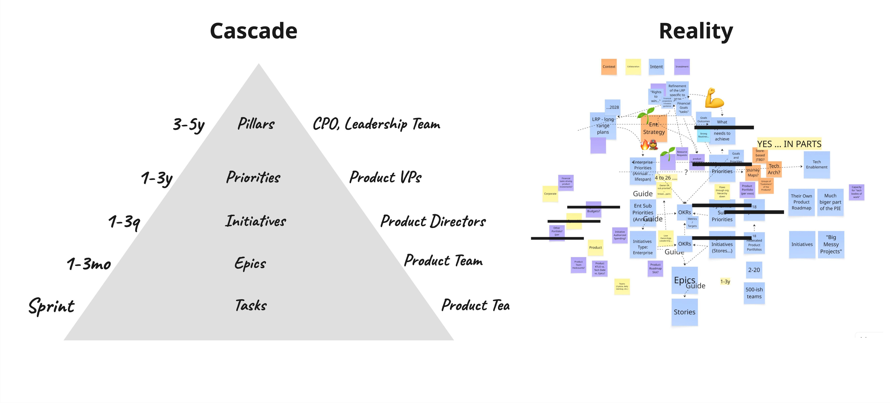

The Limits of Cascades
Summary
Cascades and pyramids are useful as legible summaries, but they break down quickly as models of how product organizations actually work. They often turn into containers stacked on containers, hiding anchors, flattening perdurants, and making the system look cleaner than it is.
The previous notes established two important ideas. First, product systems are harder to model because the relevant entities evolve and the important processes overlap. Second, containers are not the same thing as anchors. This note takes the next step. Many of the cascades and pyramids organizations rely on are really containers stacked on containers. They create a legible representation, but they often drift away from the anchors and perdurants that would let people understand what is actually happening.
Why Cascades Are Appealing
Cascades are everywhere for a reason.
A cascade gives you:
- a visible hierarchy
- a sense of alignment
- a rough story about time
- a simple way to explain how work "ladders up"
That is useful, especially in large organizations that need a common representation.
In the language of this guide, a cascade is often a useful container. It gives people a portable, simplified view of how things relate.
The problem begins when those containers are stacked on top of each other and then mistaken for the underlying reality.
Operational Difference
Use this test:
- If the representation is being used as lightweight orientation, a shared shorthand, or a rough executive summary, a cascade can hold real value.
- If people are using it to explain how work actually moves, how outcomes materialize, how signals travel, or how decisions get revised, it will usually break down.
So the real question is not, "Is this a cascade?" It is, "What are we asking this representation to do?"

A cascade offers a clean summary. The lived operating model is usually much more tangled, uneven, and multi-directional.
What Cascades Hide
| Problem | Cascade suggests | What gets hidden |
|---|---|---|
| Direction | information mainly flows downward | feedback, learning, and signals moving upward from teams, customers, and operations |
| Time | each layer is a neat slice of the system | the perdurant: the history, overlap, iteration, and revision that make the work intelligible |
| Outcomes | work ladders up neatly across layers | outcome lag, uneven causal paths, and the fact that impact may materialize on very different timescales |
| Naming | each layer names a clean kind of thing | overloaded categories like initiative, epic, or priority that no longer match reality consistently |
| Participation | lower levels should become more specific | teams get cast as delivery recipients rather than participants in framing, interpretation, and strategy formation |
That is why cascades often work better as explanatory shorthand than as serious operating models.
What To Model Instead
If you want something more faithful than a cascade, the move is not to create an even fancier pyramid. It is to make a few things more explicit.
A cascade often treats the named layers as if they were all stable endurants. But many of the most important things in product work are not stable in that way. Initiatives, priorities, bets, and even some goals are often better understood as summaries of ongoing interpretation, coordination, and revision.
That is why cascades so often harden the wrong endurants and hide the perdurants that actually explain the system: discovery loops, decision cycles, learning loops, reframing, coordination work, and changing interpretations of impact.
| Make explicit | Why it matters |
|---|---|
| anchors | so the model stays tied to things closer to observable reality |
| perdurants | so the important loops, histories, and changes do not disappear |
| transitions and state changes | so learning and reinterpretation stay visible |
| multiple lenses | so outcomes, work, finance, risk, and structure are not collapsed into one view |
| horizon and refresh cadence | so artifacts are understood by how far they look and how often they change |
That usually gives you something less tidy than a cascade, but much more useful.
Case Study
A mid-sized SaaS company started with a classic cascade: a handful of company goals broken down into department goals, then into initiatives, epics, and tasks. It looked clean and aligned, but in practice it obscured how the business actually worked. High-impact work did not fit neatly into a single branch, goals drifted as conditions changed, and teams spent more time mapping work to the structure than understanding its impact. The cascade reinforced hierarchy and simplicity, but lost nuance around causality, timing, and how inputs actually drove outcomes.
The company shifted to modeling the business as a set of connected drivers. Goals were no longer tied to teams or levels, but to points of leverage in the system, with relationships between inputs and outputs made explicit. This resulted in more goals, not fewer, but those goals provided better context rather than more work. Instead of forcing alignment through structure, teams aligned through a shared understanding of how the system behaved and where they could have impact.
The result was a shift from managing a plan to managing a system. Work was no longer categorized and cascaded, but evolved over time, influencing multiple goals and adapting as understanding improved. The company optimized for congruence over simplicity, treating product development not as a static plan to execute, but as a dynamic system to continuously learn and steer.
In series terms, the cascade had become a stack of containers mistaken for anchors. Some named layers were unstable endurants or even the wrong endurants, while the real perdurants, transitions, and outcome lag were getting compressed away. The better move was not less structure, but better structure: tighter anchors, more faithful endurants, explicit perdurants and state changes, and a form of legibility that stayed closer to reality instead of crowding out métis. In other words, they stopped treating a dynamic optimization problem as if it were a static cascade.
Why This Matters
If you treat a cascade as the real structure of the system:
- you hide upward feedback
- you hide the perdurants that explain how the system is actually moving
- you flatten multiple lenses into one
- you over-prescribe work at the edges
- you make flexible concepts look more stable than they really are
- you make small, high-impact work harder to represent honestly
If you recognize its limits:
- you make room for upward and sideways information flow
- you separate containers from anchors more carefully
- you preserve more of the unfolding process instead of only the summary
- you use multiple interacting views where one stack is too blunt
- you build a model that better matches how organizations actually learn and coordinate
The issue is not that cascades are useless. The issue is that they are too often mistaken for reality.
Try This Now
- Take one common cascade or pyramid from your organization.
- Ask what it implies about direction: what seems to flow downward, and what important information is missing from the bottom up?
- Ask what lenses are absent: outcomes, work, finance, structure, risk, dependencies, or something else.
- Then ask: where are the real anchors, and which important perdurants or state changes are being compressed away?
Keep Reading
Métis vs. Legibility